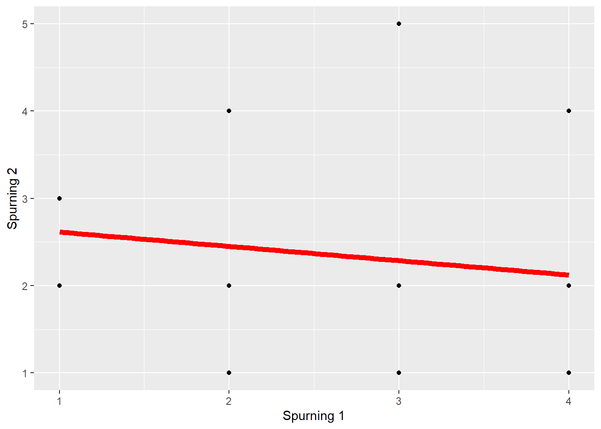

Meðaltals tilreikningur (e. mean imputation)
Hugmyndin um meðaltals tilreikning vísar í þá hugmynd að til þess að varðveita gögn er betra að setja inn meðaltal úrtaksins í einstakar breytur hjá einstaklingum frekar en að henda þeim út.
Til dæmis ef einstaklingur svarar flestum spurningum á spurningalista en sleppir að svara nokkrum þá væri það æskilegra að nota tilreikning en að henda honum út.
Til þess nota meðaltals tilreikning þarftu að reikna meðaltal fyrir breytuna í úrtakinu og nota það til þess að fylla inní eyðurnar hjá þeim sem svöruðu ekki.
Sjáum hvernig þetta lýtur út:
print.data.frame(gagnasafn)## Þatttakandi Spurning 1 Spurning 2 Spurning 3 Spurning 4 Spurning 5
## 1 Þatttakandi1 1 2 2 3 5
## 2 Þatttakandi2 1 3 1 3 2
## 3 Þatttakandi3 2 2 3 2 NA
## 4 Þatttakandi4 2 2 NA 2 1
## 5 Þatttakandi5 3 1 3 1 4
## 6 Þatttakandi6 NA NA NA NA NA
## 7 Þatttakandi7 2 4 1 5 1
## 8 Þatttakandi8 4 1 1 1 1
## 9 Þatttakandi9 3 2 3 2 3
## 10 Þatttakandi10 4 NA 1 NA 5
## 11 Þatttakandi11 2 1 5 5 3
## 12 Þatttakandi12 4 1 1 4 5
## 13 Þatttakandi13 4 4 3 3 NA
## 14 Þatttakandi14 3 5 NA NA NA
## 15 Þatttakandi15 1 3 1 3 4
## Spurning 6
## 1 3
## 2 2
## 3 NA
## 4 3
## 5 3
## 6 NA
## 7 4
## 8 1
## 9 4
## 10 2
## 11 3
## 12 1
## 13 2
## 14 NA
## 15 5Hérna er gagnasafn þar sem má sjá að sumir þátttakendur hafa ekki svarað öllum spurningum. ATH: Áður en við byrjum tilreikna þurfum við að taka afstöðu til þess hve margar spurningar má vanta áður en við fjarlægjum þátttakandann. Ekkert eitt svar er við þessari spurningu og hér þurfum við því að taka vandaða afstöðu.
Skoðum gagnasafnið;
-Við sjáum að þátttakandi 6 sleppti því að svara öllum spurningum, við ákveðum því að fjarlægja hann.
-Einnig má sjá að þátttakandi 14 sleppti 4 spurningum af 6. Við skulum því fjarlægja hann þar sem hann hefur sleppt því að svara meirihlutanum af spurningunum. Við gerum grein fyrir þessari kríteríu í aðferðakaflanum.
-Hinum vantar aðeins 1-2 spurningar, við skulum því nota tilreikning fyrir þá.
print.data.frame(gagnasafn)## Þatttakandi Spurning 1 Spurning 2 Spurning 3 Spurning 4 Spurning 5
## 1 Þatttakandi1 1 2 2 3 5
## 2 Þatttakandi2 1 3 1 3 2
## 3 Þatttakandi3 2 2 3 2 NA
## 4 Þatttakandi4 2 2 NA 2 1
## 5 Þatttakandi5 3 1 3 1 4
## 6 Þatttakandi7 2 4 1 5 1
## 7 Þatttakandi8 4 1 1 1 1
## 8 Þatttakandi9 3 2 3 2 3
## 9 Þatttakandi10 4 NA 1 NA 5
## 10 Þatttakandi11 2 1 5 5 3
## 11 Þatttakandi12 4 1 1 4 5
## 12 Þatttakandi13 4 4 3 3 NA
## 13 Þatttakandi14 3 5 NA NA NA
## 14 Þatttakandi15 1 3 1 3 4
## Spurning 6
## 1 3
## 2 2
## 3 NA
## 4 3
## 5 3
## 6 4
## 7 1
## 8 4
## 9 2
## 10 3
## 11 1
## 12 2
## 13 NA
## 14 5Hér er búið að taka út þátttakendur 6 og 14. Núna skulum við reikna meðaltal fyrir hverja spurningu.
Hér sjáum við meðaltöl fyrir hverja spurningu:
Meðaltal fyrir spurningu 1 = 3
Meðaltal fyrir spurningu 2 = 2
Meðaltal fyrir spurningu 3 = 2
Meðaltal fyrir spurningu 4 = 3
Meðaltal fyrir spurningu 5 = 3
Meðaltal fyrir spurningu 6 = 3
Tökum því meðaltalið og setjum það inn
print.data.frame(gagnasafn)## Þatttakandi Spurning 1 Spurning 2 Spurning 3 Spurning 4 Spurning 5
## 1 Þatttakandi1 1 2 2 3 5
## 2 Þatttakandi2 1 3 1 3 2
## 3 Þatttakandi3 2 2 3 2 3
## 4 Þatttakandi4 2 2 2 2 1
## 5 Þatttakandi5 3 1 3 1 4
## 6 Þatttakandi7 2 4 1 5 1
## 7 Þatttakandi8 4 1 1 1 1
## 8 Þatttakandi9 3 2 3 2 3
## 9 Þatttakandi10 4 2 1 3 5
## 10 Þatttakandi11 2 1 5 5 3
## 11 Þatttakandi12 4 1 1 4 5
## 12 Þatttakandi13 4 4 3 3 3
## 13 Þatttakandi14 3 5 2 3 3
## 14 Þatttakandi15 1 3 1 3 4
## Spurning 6
## 1 3
## 2 2
## 3 3
## 4 3
## 5 3
## 6 4
## 7 1
## 8 4
## 9 2
## 10 3
## 11 1
## 12 2
## 13 3
## 14 5Núna vantar ekkert gildi og við getum því reiknað t.d. fylgni á milli breyta.
ggplot(gagnasafn, aes(x=`Spurning 1`, y=`Spurning 2`)) +
geom_point() +
geom_smooth(method=lm, se=FALSE, col='red', size=2)